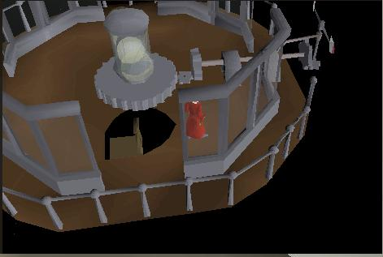
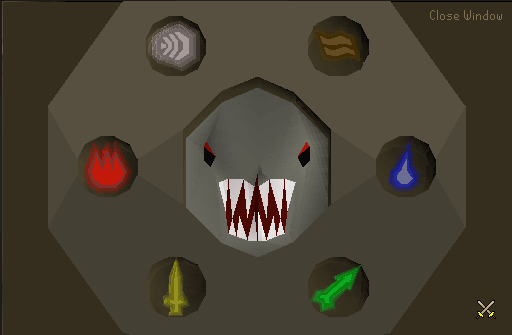
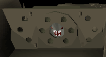
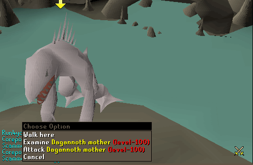
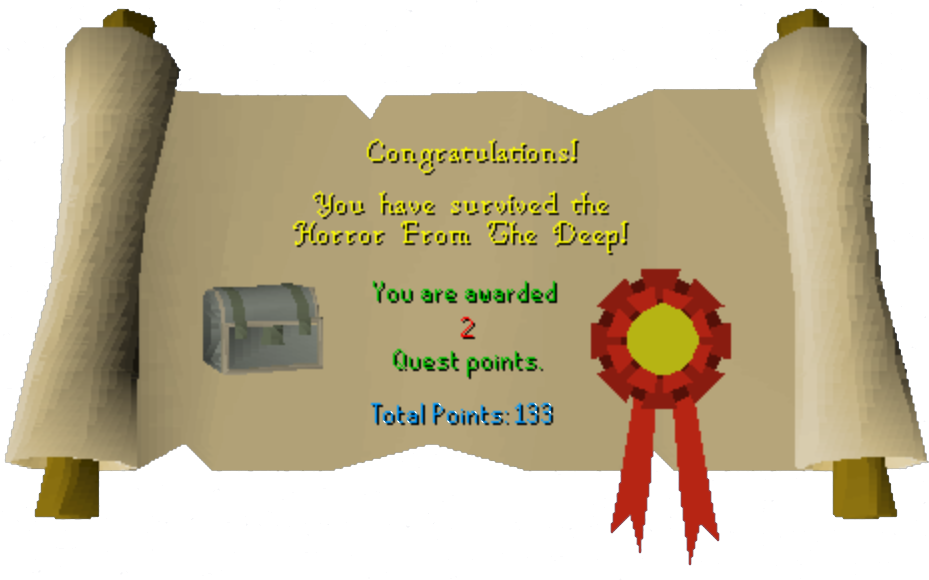
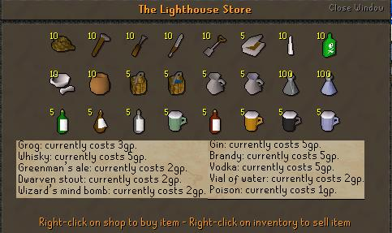
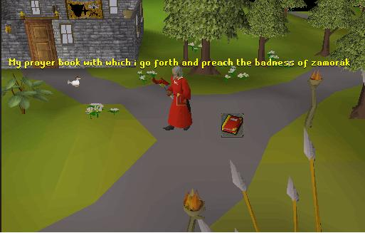

Horror from the Deep
Description: The lighthouse protecting Kandarins North Western coastline has mysteriously stopped operating, and contact with the lighthouse keeper Jossik has been lost. The Council would greatly appreciate it if somebody could discover for them what has happened to this most vital landscape feature.Difficulty: Medium
Length: Short
Required Quests:
- Barcrawl (Miniquest)
Items & Skills Needed:
- 35 Agility
Recommended:
- Ability to defeat a tough level 100 monster
Reward: 2 Quest Points, a Damaged prayer book of your choice; 4662 Range, Magic, and Strength experience
Part 1: Fix the Lighthouse
Go to the Lighthouse area (located in the farthest northwest corner of Runescape) and talk to Larissa.
Go down south of her across the jumping platforms and into the Barbarian Outpost to talk to Gunnjorn and get the Lighthouse key. (If you don't already have Planks, get them here.)
Make your way back to the lighthouse then a little ways east to the broken bridge. Use your planks on each side of the bridge (automatically uses your Hammer and nails).
Go back and talk to Larissa. After talking to her go into the Lighthouse.
Go up one level and search the book case; take the books. Read the lighthouse manual and the diary.
Go up one more level. Use the Swamp tar with the lighting mechanism and then use your Tinderbox on it. Then use your Molten glass on the lighting mechanism.

Go back down and talk to Larissa
Part 2: The Door


Have the runes, arrow, and the sword in your inventory and go down the ladder and walk over to the strange wall.
Use your arrow, sword, air rune, earth rune, water rune, and fire rune on the strange wall.
Note: You will not get any of this stuff back.
Note: You will not get any of this stuff back.
Open the strange wall, climb down the ladder, and talk to Jossik.
Part 3: The Monster from the Greyish-Green Lagoon
Fight and kill the baby level 100 monster that attacks you (quite easy with protect from melee).
After the first baby is killed another level 100 monster attacks you.

It uses a form of the prayers and changes colors to show what it is weak to:
- Orange means you can melee.
- Green means you can range.
- Red means you can use fire spells.
- Brown means you can use earth spells.
- Blue means you can use water spells.
- White means you can use air spells.
It also attacks with both range and melee attacks, the range attack is weak so always use protect from melee.
Switch between melee, range and magic as the monster switches colors. Just keep your prayer up and keep an eye on your hits. Some people recommend hiding behind the nearby rocks as it changes to forms you can't attack, then rushing back out to continue the battle.
Congratulations, Quest Complete!

Quest finished! When you kill the second monster you will be automatically transported out of the room and you will see the Quest Completed picture. You will get your exp, quest points and a Rusty casket.
Go up to the second story of the Lighthouse; Jossik is now there. You can buy most ales and some other stuff off him. But for now talk to him. He tells you to read what the Rusty casket says; pick the same god twice to receive a Damaged book of that god (Guthix, Saradomin or Zamorak).

I picked Zamorak and got an unholy book of Zamorak. All Damaged books give a +5 prayer bonus and are wielded in the shield spot.

This quest guide was written by Im4eversmart. Thanks to DRAVAN, Dracon, Brenden, alex200599, Headbiter, Demonichell, Agamemnus, Eq_S_Guy, and Ghoulies for corrections.
This quest guide was entered into the RuneHQ.com database on Tue, Sep 14, 2004, at 09:50:55 PM by DRAVAN and was last updated on Wed, Nov 02, 2005, at 08:56:14 PM by DRAVAN.